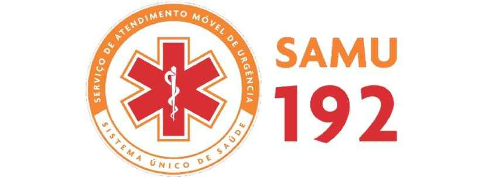
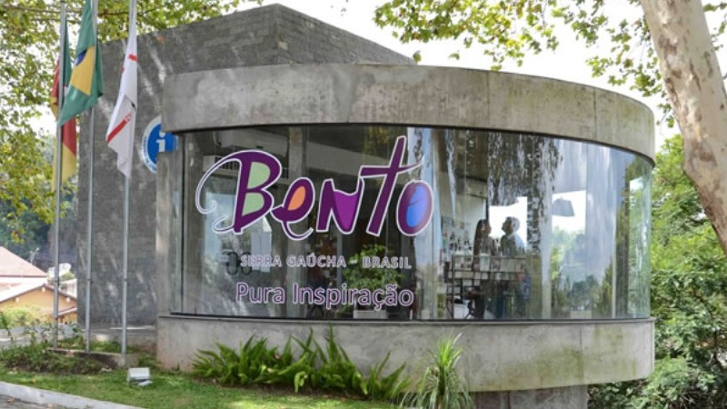
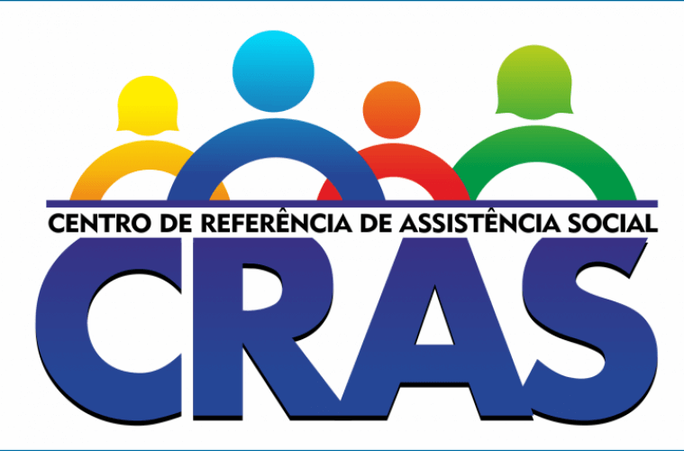

Contatos Úteis
Corpo de Bombeiros
Telefone: 193
Brigada Militar

Telefone: 190
SAMU
Telefone: 192
Centro de Atendimento ao Turista
Telefone: (54) 3055-7202
CRAS
Telefone: (54) 3771-4240/ (54) 3055-7013/ (54) 3771-4220
CREAS
Telefone: (54) 3055-7357
REVIVI
Telefone: (54) 3454-5400